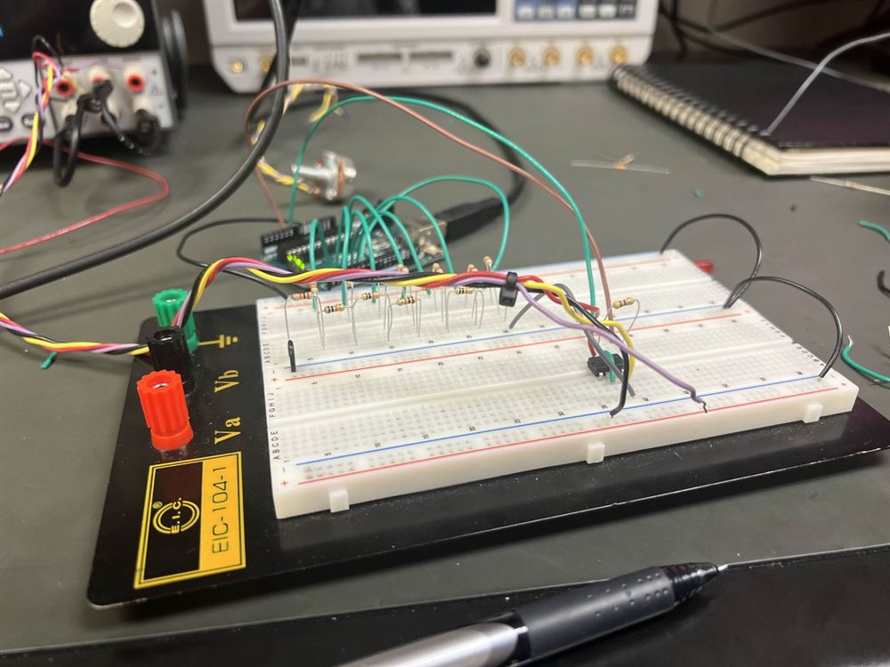
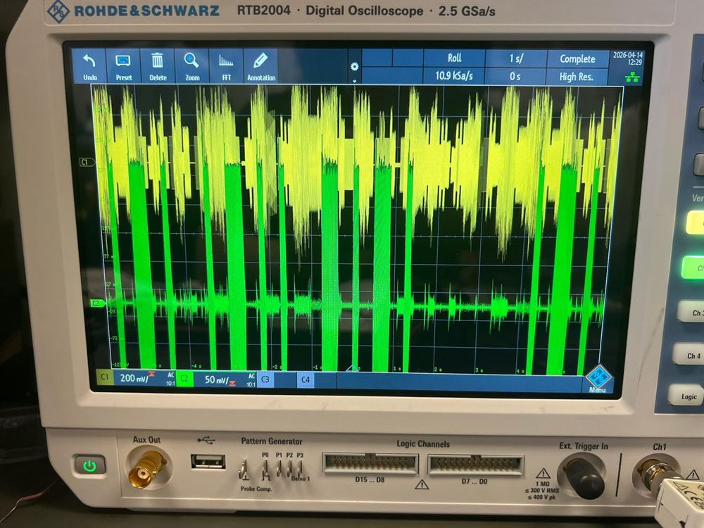

Jerett De Guzman
Electrical & Computer Engineering Student · Rutgers University
Summary
I design, simulate, build, and debug circuits from start to finish, with a 4.0 GPA in Rutgers ECE. On the Rutgers VEX U robotics team, I wire sensors, motors, and power distribution, and I argued for an Orange Pi vision platform so the robot could read AprilTags. I'm working toward perception and computer vision, starting from the electrical side of the robot.
Projects
-
 Trajectory & Motion Planning · Fall 2026
Autonomous Mobile Robot Trajectory Design
A 53.3 m collision-free route through four sensing stops, built from step and ramp signals, inside a battery-limited mission.
Trajectory & Motion Planning · Fall 2026
Autonomous Mobile Robot Trajectory Design
A 53.3 m collision-free route through four sensing stops, built from step and ramp signals, inside a battery-limited mission.
-

Power & Feedback Control · Fall 2025 7-Bit Constant Current Supply An Arduino-programmable current source held within ±0.25 mA of its setpoint by closed-loop feedback. -
 Digital Logic · Fall 2025
Traffic Light State Machine
A demand-driven traffic light from flip-flops and a 555 clock, debugged down to a bent ground pin.
Digital Logic · Fall 2025
Traffic Light State Machine
A demand-driven traffic light from flip-flops and a 555 clock, debugged down to a bent ground pin.
-

Analog Signal Processing · Spring 2026 Two-Stage Active Bandpass Filter Two cascaded op-amp stages (Q = 15.55) pull one Morse code message at 351 Hz out of twelve. -
 Filter Design & Simulation · Spring 2026
Three-Way Passive Crossover Network
An individual simulation project: a critically damped LC crossover at 100 Hz and 2.5 kHz.
Filter Design & Simulation · Spring 2026
Three-Way Passive Crossover Network
An individual simulation project: a critically damped LC crossover at 100 Hz and 2.5 kHz.
Experience

Core competencies
Circuit design & analysis
Active and passive filters, op-amp circuits, DACs, transfer functions, Bode analysis
Simulation & design tools
LTspice, MATLAB, KiCad, EasyEDA, Onshape, TinkerCAD
Lab, test & fabrication
Oscilloscopes, multimeters, function generators, logic probes, soldering, shop tools
Programming & digital
C++/C, Python, MATLAB, Java, Arduino, Verilog, Vivado, finite state machines
Systems & robotics
Sensor integration, motor and pneumatic wiring, power distribution, mechanism design
Working with people
Technical writing, training new team members, lab safety and supervision
Education
Rutgers University, School of Engineering
BS, Electrical & Computer Engineering
GPA 4.00 · Expected May 2028
Dean's List (2x). Coursework: Linear Systems & Signals; Computer Architecture & Assembly Language (RISC-V); Digital Logic Design; Electronic Devices; Principles of EE I & II.
Passaic County Community College
AS, Computer Science
GPA 3.75 · Sept 2022 – May 2025
Graduate Achievement Award (top of the CS major), Phi Theta Kappa, Dean's List (5x). Coursework: Java Programming; Data Structures; Computer Organization & Architecture.